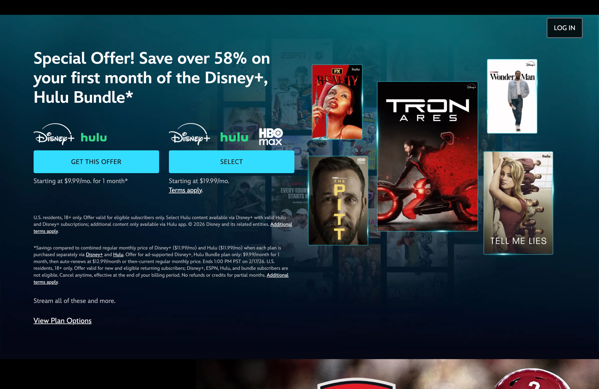
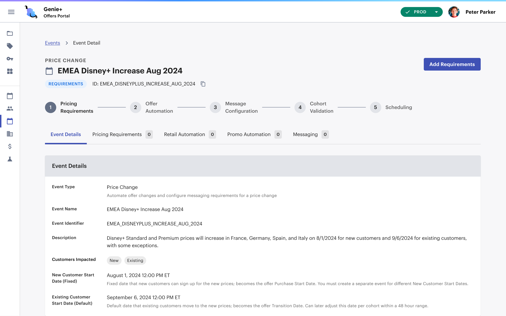

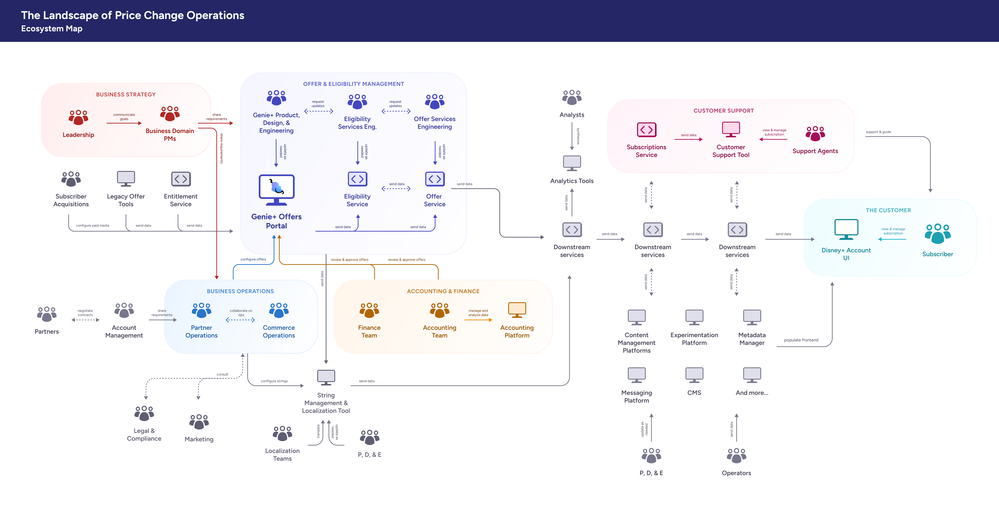
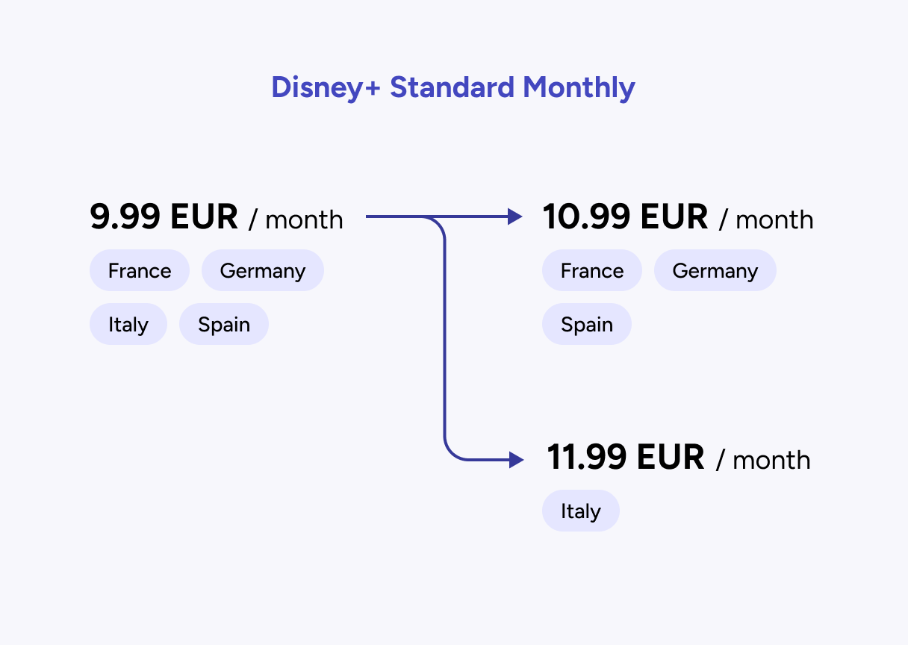
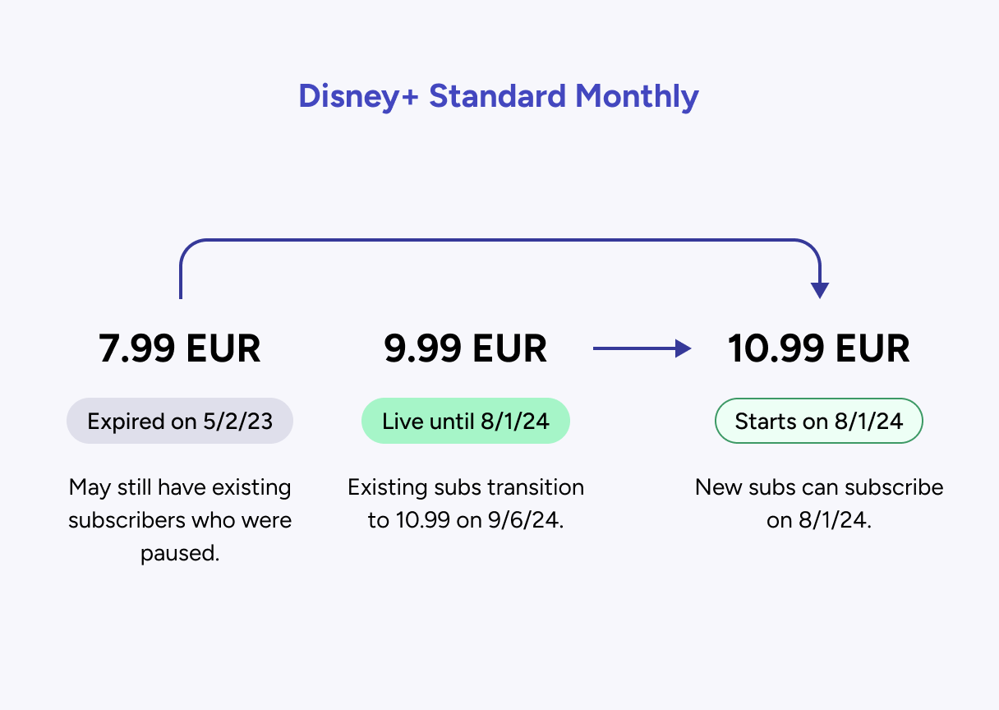

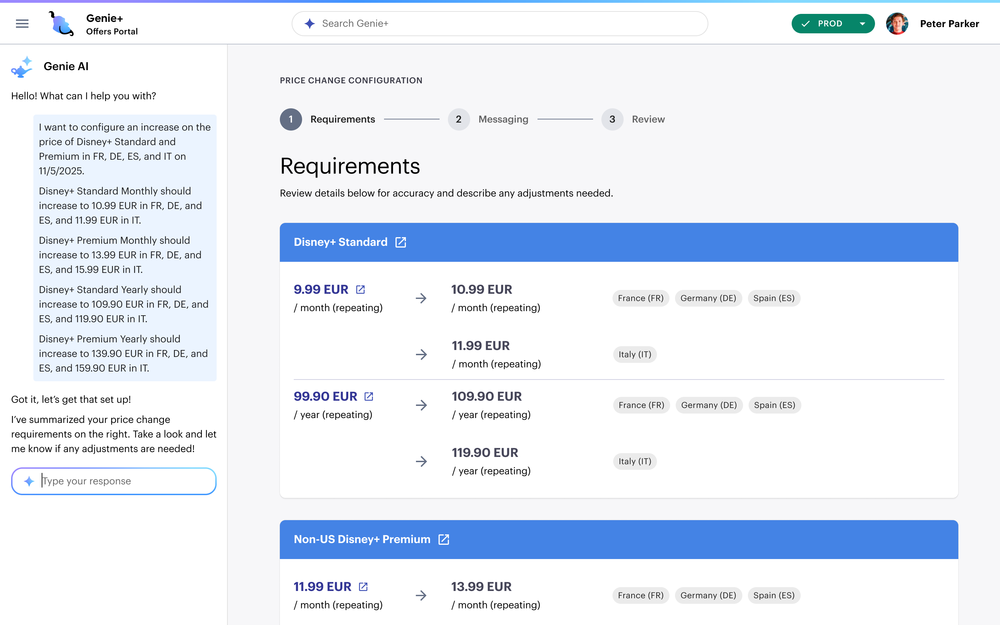

The Walt Disney Company
Streamlining Disney's Global Price Change Operations
Designing a guided and automated workflow to improve operational efficiency of launching price changes for Disney's global streaming subscription plans.
Timeframe
Jan 2023 to present
Product Type
Enterprise platform
Desktop web
Team
4 Product managers
12+ Frontend engineers
4+ Backend engineering teams
2 TPMs
My Role
- Prototyper
- User researcher
- Design strategist
- Visual designer
- Information architect
- Interaction designer
- Lead designer
Context
Profitability through price increases
To increase the price of Disney+, Hulu, or ESPN+, you may imagine it's as simple as typing a new price into an internal system. In reality, it's a hugely complex operational process requiring multiple teams over 2–3 months.
Though no streaming subscriber loves a price increase, they are critical for the business to maintain profitability and fund creation of new content. Every week of delay costs millions in lost revenue.


Genie+ Offer Management Platform
I led the design of a new self-service price change operations tool within the internal offer management platform called Genie+, transforming a fragmented, spreadsheet-driven, manual process into a guided and automated workflow that helped to improve operational efficiency.
Objective
Reduce operational steps and time spent on manual configurations for a price change to enable faster time to market and greater revenue for the business.
Discovery
Navigating technical and operational complexity involving 10+ teams
To kick off the work, I facilitated interviews, goal-setting workshops, and discussions with stakeholders to deeply understand and map exactly what needs to happen when increasing a streaming subscription price.
10+ teams
Primary users include Business Operations, Accounting, and Finance teams who configure, approve, and publish the data. Secondary users include Marketing, Analytics, Engineering, and Product teams.
Thousands of steps
Each step additionally involves multiple interconnected services and tools, with mistakes at any point having implications upstream or downstream and requiring hours of meetings to troubleshoot. A simple typo can lead to improper billing or legal text, resulting in lost revenue!

Upstream and downstream dependencies
Each step additionally involves multiple interconnected services and tools, with mistakes at any point having implications upstream or downstream and requiring hours of meetings to troubleshoot. A simple typo can lead to improper billing or legal text, resulting in lost revenue!

Principles
Balancing efficiency with risk reduction
Though the quickest solution that comes to mind may be to simply automate more steps, I learned of the importance of balancing efficiency with reducing risk for error.
Automation can reduce steps for users but increases complexity and risk for engineering as they must build logic that encompasses many scenarios and spend time troubleshooting the logic. Additionally, directing users to quickly apply large data changes can lead to more errors and incidents compared with purposefully having them slow down and review a digestible chunk of information at a time.
Design Principles
Based on my research findings I defined the following guiding principles for my work:
- Minimize repetitive or programmable steps
- Allow flexibility to manually configure complex cases
- Purposefully add steps for review and validation to prevent errors
- Use natural language over domain-specific terminology
Exploration
The mental models of a price change
While tackling this complex design challenge, I found it most helpful to reference real data from past price changes, allowing me to gain deep familiarity with the scale of the process, typical order of operations, and areas of redundancy. I led a brainstorming workshop to gather ideas, and distilled them into 3 different approaches for the overall workflow and layout based on existing mental models plus a new mental model.

Refinement
Start with the packages, then dive deeper
Through multiple stakeholder reviews and user feedback sessions on the wireframes, I learned that the package-based approach (approach C) worked best as it reduced the most steps and minimized cognitive load for operators by reducing the need to understand internal data relationships or existing processes.

Feedback to inform refinement
Of course, certain elements of the wireframes had room for improvement. I incorporated the feedback into higher-fidelity interactive prototypes, conducted detailed usability testing with the prototypes, and refined the designs based on the findings.
- Improved confusing wording
- Increased visibility of countries during requirements configuration
- Added ability to set unique dates for new vs. existing customers
- Added more helpful guidance
- Messaging, the most time-consuming phase, required deeper integration into the workflow
- Dates and prices frequently change close to launch, making flexibility critical
Alignment on launch scope
To facilitate alignment on a feasible MVP solution, I led conversations with product and engineering, suggesting we start with the automation of retail offer configurations before moving on to others. I advocated for certain UI elements in the MVP as table stakes for usability of the workflow, including a progress stepper and immediately visible help text and instructions, ensuring consistency and scalability by leveraging existing system components where possible.
Implementation
Tight collaboration to work through edge cases
Due to the immense technical complexity, the team quickly discovered a multitude of complicated edge case scenarios that needed bespoke design and engineering problem-solving.
For example, what should display when one product's price "forks" into 2 different new prices based on the country? How do we account for subscribers who remained on long-expired offers due to their subscription being on a hold? I collaborated closely with product management and engineering on these challenges, brainstorming ideas and solutions through several white-boarding sessions.

Forking prices
To clearly depict the common origin of "forked" prices, I proposed that we display them grouped together in a row in the requirements step.

Leapfrog transitions
For subscribers who remained on long-expired offers, we aligned on a technical solution of automatically transitioning those subscribers to the latest offer by traversing the "chain of offers" rather than requiring manual configuration for every case.

Outcomes
Improved overall efficiency but with caveats
After about a year, we launched the first version of the "Price Change Event" workflow to the Business Operations, Accounting, and Finance teams. This reduced overall operational steps for price changes and helped to enable an 8% increase in revenue growth and $1.3B in operating income for Disney's Direct-to-Consumer segment in 2025 compared to $143M in 2024 (source).
Operational Efficiency
66%
decrease in time spent on component offer configurations, improving operational velocity
Total Clicks
53%
decrease in overall clicks, reducing opportunity for misconfiguration
Revenue Enabled
$1.3B
operating income in 2025 from direct-to-consumer subscription profits (source)
"Wow, it's the best tool I've used in my time here! It allowed me to create component offers for an entire price increase in less than 20 minutes, which has saved me hours and made it so much easier!"
User feedback from Business Ops Coordinator

Continued iteration needed
To support the growing complexity of Disney's streaming options and frequency of planned price increases, we needed to make sacrifices in order to launch the MVP of this workflow in a timely manner. As a result, users felt understandably frustrated with some aspects of the experience:
- Bugs and inaccuracies in the automations leading to incidents and hours spent troubleshooting issues
- Lack of automation support for certain parts of the process and edge cases
This highlighted the necessity of a sustained investment in enterprise product quality. Since launch, we've incrementally improved the workflow to tackle the issues, fixing bugs and adding support for promotional offers.
Though competing business priorities are ever-present, I leverage user feedback to influence the post-MVP roadmap and have advocated for usability enhancements including reduced accounting steps, automation of campaigns and SKUs, and tighter integration with messaging to reduce redundant steps.
Long-Term Vision
Narrowing the distance from business intent to launch
While we've made improvements to the workflow we built, there's much more to do! As our business has evolved and teams have changed, I've driven alignment towards a long-term vision for price change operations, creating future-state design concepts and sharing them with stakeholders to gather feedback and build interest.
What if a business leader could simply provide their intent for a price change in human language and an intelligent system could parse that information into the appropriate data changes with the help of human reviewers, and the changes could be launched in a matter of days?
It sounds magical, but with the rapid evolution of generative AI technology, it may not be too far away.

Reflection
Become an expert in the domain
You might not think a designer needs to understand the intricacies of a data model, but I learned through this work that having deep knowledge and understanding of the details is actually critical to designing for technically complex spaces and should inform each decision. As engineers brainstorm and problem-solve to determine solutions to technical challenges, those decisions are inextricably tied to the user experience of the operator using the tool.
By having a deep understanding, I could more fluidly collaborate and brainstorm together with the engineers to ultimately determine the most feasible, viable, and impactful solutions. It allowed me to earn the trust of my colleagues and influence product decisions and strategy with a user-centric lens.